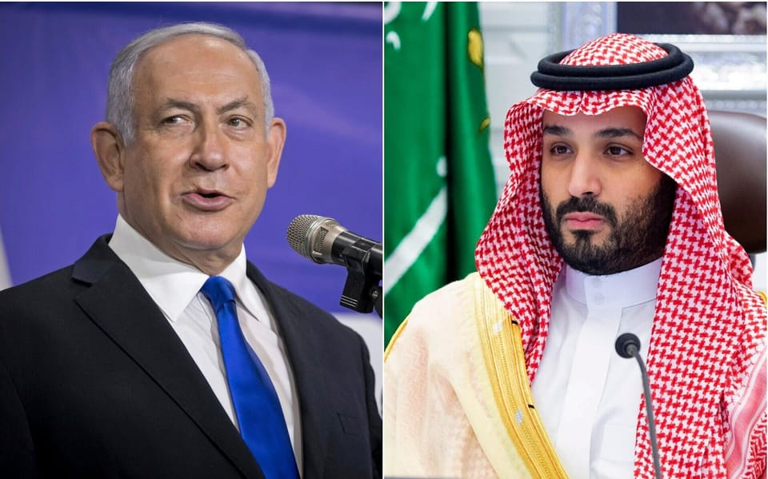

世界苦茶09月23日新闻 | 38条 | 中国开始抢人才

中国开始抢人才 | 外资抛售中国国债 | 台湾民众对美国信心下降 | 葡萄牙承认巴勒斯坦国 | Jimmy Kimmel秀恢复
苦茶数据
美元兑人民币：7.11（昨日7.11，前日7.10）
美元兑日元：147.87（昨日148.36，前日147.90）
上证指数：3821（昨日3822，前日3820）
标普500指数：6693（昨日6664，前日6631）
比特币：112984（昨日114461，前日115700）
布伦特原油：67.21（昨日67.08，前日66.68）
中国新闻
• 美国对H-1B签证征收10万美元费用，中国将推出面向全球人才的K签证： 尽管中国准备下个月推出一项旨在吸引全球专业人士的新工作签证，但中国对美国总统唐纳德·特朗普决定对H-1B签证征收10万美元费用的决定保持沉默。外交部发言人郭家坤在新闻发布会上表示：“我们对美国的签证政策不予置评。”但他也向国际工作者发出了邀请。 “在全球化的背景下，人才跨境流动对全球科技和经济进步至关重要，”官方媒体新华社援引他的话说。“中国欢迎世界各国各行各业的优秀人才来华发展，为人类进步和事业成功贡献力量。”K签证持有者将可以参与以下活动：“中国的发展需要世界各国人才的参与，中国的发展也为他们提供了机遇，”新华社援引一位官员的话称。
• 韩国高端科研人才流向中国 学界呼吁改革： 韩国高级科研退休人才流向中国的现象日益突出，引发关注。学界有观点指出，政府应为退休科研人员继续在校方支持下开展研究提供制度保障，以防人才外流。韩国科学技术院电气电子工程学院名誉教授宋翊镐日前被聘为中国成都电子科技大学基础及前沿研究所教授。宋翊镐1982年毕业于首尔大学电子工程系，于1987年在美国宾夕法尼亚大学获得电子工程学博士。除宋翊镐之外，韩国前高等科学院副院长李淇明，现任北京雁栖湖应用数学研究院研究员；成均馆大学高被引特聘讲座教授李永熙，现任湖北工业大学材料与化学工程学院教授；前首尔大学教授金修奉，现任中山大学物理学院教授。
• 习近平强调农业现代化 ：中国国家主席习近平说，中国式现代化离不开农业农村现代化，并呼吁强化农业科技装备支撑，多措并举促进农民就业和增收，以提升农业综合生产能力。据新华社报道，在第八个“中国农民丰收节”到来之际，习近平向全国广大农民和工作在“三农”战线上的人士致以节日祝贺和诚挚问候，并称“今年，我们克服干旱、洪涝等自然灾害影响，实现夏粮稳产、早稻增产，粮食有望再获丰收。”
• 继小红书微博快手后，网信办又就热搜榜单处罚了头条、UC： 今日头条“不仅在热搜榜单主榜呈现不良信息内容，还在落地页面置顶呈现相关话题”。UC“在热搜榜单主榜扎堆呈现极端敏感恶性案事件词条等非权威部门媒体发布的信息，涉及网络暴力、未成年人隐私等话题”。
• 何立峰会美议员促沟通 ：中国副总理何立峰与美国国会众议员代表团会面，称希望美国同中国坦诚沟通、增信释疑，推动中美经贸关系稳定、健康、可持续发展。由美国众议院军事委员会资深议员史密斯率领的代表团星期天抵达北京。这是美国国会跨党派众议员代表团时隔六年再次访华。据新华社报道，何立峰星期一在人民大会堂与代表团会面时说，中美双方拥有广阔的合作空间和广泛的共同利益，希望美方同中方按照相互尊重、和平共处、合作共赢的原则坦诚沟通、增信释疑，推动中美经贸关系稳定、健康、可持续发展。
• 潘功胜表示，中国货币政策宽松 ：中国人民银行行长潘功胜表示，中国的货币政策立场是支持性的，实施适度宽松的货币政策，会根据宏观经济运行情况和形势变化，以数据为基础，综合运用多种货币政策工具，保证流动性充裕。潘功胜在星期一的新闻发布会上被问及，美联储在9月议息会议决定降息25个基点，中国人民银行下一步的货币政策有何考虑时表示，美联储9月降息后，市场反应相对平稳。美元指数基本维持在97的区间附近，国际资本市场总体上行，大宗商品市场振荡下行。中国的股、债、汇等主要金融市场也保持平稳运行。潘功胜说，中国央行在货币政策的确定上，宏观层面的原则是非常清晰的，“中国的货币政策坚持以我为主，兼顾内外均衡”。
• 美国会代表团访华会董军 ：美国众议院跨党派议员代表团访华期间，在北京与中国国防部长董军会面。路透社引述联合媒体报道称，这支罕见访华的美国国会代表团星期一在中国首都北京会见董军，目的是加强两国包括军事交流在内的双边沟通。代表团星期天正式访问中国，并于当天下午在人民大会堂会见中国总理李强。彭博社报道称，李强称这次访问为“破冰之旅”，将进一步促进两国关系。
• 网信办启动整治负面情绪专项行动 ：中国中央网信办部署开展为期两个月的专项行动。网信办负责人说，专项行动着力整治几项问题，包括挑动群体极端对立情绪、宣扬恐慌焦虑情绪、挑起网络暴力戾气，以及过度渲染消极悲观情绪。中国网信网星期一发消息称，为整治恶意挑动对立、宣扬暴力戾气等负面情绪问题，营造更加文明理性的网络环境，近日网信办印发通知，在全国范围内部署开展为期两个月的“清朗·整治恶意挑动负面情绪问题”专项行动。网信办有关负责人说，专项行动聚焦社交、短视频、直播等平台，全面排查话题、榜单、推荐、弹幕、评论等重点环节，着力整治几项问题，分别是挑动群体极端对立情绪、宣扬恐慌焦虑情绪、挑起网络暴力戾气，以及过度渲染消极悲观情绪。
• 广东江门基孔肯雅热激增 ：广东江门市一周内新增基孔肯雅热2238例，疾控专家提醒中秋国庆假期临近，人群流动性将进一步加大，基孔肯雅热疫情传播扩散风险持续增加。广东省疾控局星期天晚发布消息，报告9月14日至9月20日，全省新增报告2426例基孔肯雅热本地个案，其中江门2238例。广东省疾控中心传染病预防控制所所长、传染病防控首席专家康敏指出，近期江门市基孔肯雅热疫情出现反弹，当地已启动突发公共卫生事件Ⅲ级响应，全力以赴开展疫情防控。
• 台北市府宣布不办双城论坛 ：台北上海城市论坛原定本周举行，但台北市政府称，经完整考量，台北市政府与上海方面决定不在9月办理。综合《联合报》和中时新闻网星期一上午报道，台北市政府称，本届双城论坛原规划于9月举行，但评估相关事务性与技术性审查及协调进度后，认为仍需更周延的准备。经完整考量，双方决定不在9月办理。台北市政府没有说明有关事务性与技术性审查及协调的细节。 （翻评：嗯？不是刚说蒋万安要来上海么？）
• 中方谴责以议员再访台湾 ：以色列未来党议员托波洛夫斯基再次访问台湾，中国大陆驻以色列使馆批他已成为“中以关系健康发展的麻烦制造者”，对他的言行予以强烈谴责。中国大陆驻以使馆微信公号“以馆为家”星期天消息，使馆发言人答记者问时指，托波洛夫斯基不顾大陆强烈反对和严正交涉，“再次窜访台湾，多次发表涉台错误言论，严重违反一个中国原则，严重破坏中以关系政治基础”。托波洛夫斯基三度到访台湾，第一次是2024年4月，受到时任台湾总统蔡英文接见；第二次是今年4月，期间获颁台湾外交部“睦谊外交奖章”。本月他第三次率团访台，并在上星期二受到台湾总统赖清德接见。
• 福建舰完成多型舰载机弹射训练 ：中国海军歼-15T、歼-35和空警-600三型舰载机已完成在福建舰上的首次弹射起飞和着舰训练。这标志着福建舰具备电磁弹射和回收能力，验证了电磁弹射和阻拦系统与多型舰载机的良好适配性，使福建舰初步具备全甲板作业能力。
亚太印太新闻
• 菲律宾反腐游行爆冲突 ：菲律宾首都马尼拉星期天的大规模反贪腐示威活动上爆发警民冲突，超过200人被警方逮捕，其中包括至少88名未成年人。法新社报道，成千上万的菲律宾民众星期天在马尼拉参与示威集会，抗议防洪项目贪腐丑闻导致国家及人民蒙受巨额损失。然而，原本和平的抗议活动却因街头冲突而蒙上阴影。暴力事件中，多辆警车被纵火焚毁，一处警察分局的玻璃窗被砸毁。
• 卓伯源抗议未邀辩论会 ：台湾媒体上周举行国民党主席选举辩论会，候选人卓伯源却并未受邀。卓伯源就此呼吁国民党主席朱立伦不要继续包庇恶质媒体作乱，并认为所有参选主席的人士都应站出来，共同抵抗这场不公不义的对待。综合台湾《联合报》《自由时报》报道，国民党主席将在10月18日改选，目前共六人登记参选。中天电视台上星期六举办国民党主席电视辩论会，邀国民党主席候选人张亚中、罗智强、郝龙斌及郑丽文出席，郝龙斌以行程冲突为由婉拒；未受邀的卓伯源则在试图进入会场时，被工作人员阻拦。
• 台湾设安倍晋三研究中心 ：台湾成立全球首个安倍晋三研究中心，总统赖清德称台海和平归功安倍的高瞻远瞩，中国大陆官媒《环球时报》随后发文批评“台独进入癫疯模式”，并指赖清德的“日本基因认同”是“数典忘祖的奴性”。综合《自由时报》和台湾公共电视报道，星期天是已故日本前首相安倍晋三冥诞，台湾政治大学当天宣布成立全球首个安倍晋三研究中心，同时举办新时代台日关系圆桌论坛。赖清德出席论坛致辞时说，安倍晋三的离世不仅是日本和台湾的损失，也是全世界的损失，政大成立安倍晋三研究中心意义非凡。
• 李在明警告或陷金融危机 ：韩国总统李在明说，如果韩国政府在贸易谈判中接受当前美国要求而没有保障措施，韩国经济可能陷入类似1997年金融危机的困境。路透社星期一报道，李在明在接受路透社专访时说，韩方争取尽快与美方达成关税协议，但韩美在确保3500亿美元对美投资项目商业可行性方面存在分歧。他说：“如果没有货币互换，我们按美国要求的方式提取3500亿美元并全部以现金投资到美国，韩国将面临类似1997年金融危机的局面。”
• 台媒民调显示，信美军协防比例下降 ：政治立场亲蓝的台媒发布调查显示，如果两岸发生军事冲突，相信美国会派兵协防台湾的民众从49%降至41%，觉得不会派兵协防者则从42%增加到49%。《联合报》的两岸关系年度大调查显示，近三年调查都有66%民众认为台湾应该维持等距，不倾向美国或中国大陆任何一方，主张向美国倾斜的比率从前两年调查的21%减少到18%，12%支持向大陆靠拢，比率较去年增加四个百分点。调查发现，即便是民进党支持者，也有51%认为台湾应和美国和大陆维持等距，比率高于倾美的46%，国民党、民众党支持者和无政党倾向的中立民众，则多主张对美国或大陆应维持等距，比率接近或超过70%。
• 莫迪呼吁抵制外国商品 ：印度和美国的贸易关系恶化之际，印度总理莫迪敦促国民停止使用外国制造的产品，改用本土生产的产品。美国总统特朗普早前为了惩罚印度购买俄罗斯石油，对美国进口的印度商品征收50%关税。之后，莫迪就发起了一场自力更生运动，敦促国民使用印度制造的商品。他的支持者也发起了抵制美国品牌如麦当劳、百事可乐和苹果的运动，这些品牌在印度都非常受欢迎。印度将在周一实施广泛的消费税减税政策。莫迪在政策落实前夕向全国发表讲话。他说：“我们每天使用的很多产品都是外国制造的，我们只是不知道……我们必须摆脱它们。我们应该购买印度制造的产品。”但他没有点名任何国家。
科技新闻
• 美拟警告泰诺或致自闭症 ：据《华盛顿邮报》引述知情人士报道，特朗普政府官员计划星期一发布声明称，泰诺中的活性成分对乙酰氨基酚可能与自闭症存在关联。报道称，官员们将警告孕妇，除非发烧，否则避免使用这一全球最常见的非处方止痛药。此前有报道称，政府正在调查对乙酰氨基酚与自闭症之间的潜在联系，消息一出，泰诺制造商肯维公司的股价应声下跌。 （翻评：纯扯淡，没有任何根据。）
• 英伟达与OpenAI达成千亿美元合作 ：当地时间周一，英伟达和OpenAI宣布达成合作，包括建设庞大数据中心计划，以及英伟达对OpenAI最高1000亿美元的投资。根据协议，OpenAI将利用英伟达系统建设并部署至少10吉瓦的人工智能数据中心，用于训练和运行下一代模型。这一耗电量相当于 800万户美国家庭的用电量。英伟达CEO黄仁勋表示，10吉瓦相当于400万至500万块 GPU，约等于英伟达今年的出货总量，是去年的两倍。知情人士称，英伟达首笔 100亿美元投资将在第一个吉瓦数据中心建成时投入。双方表示，英伟达将随着每一吉瓦数据中心上线逐步投资，首个阶段预计在2026年下半年启用，基于英伟达的Vera Rubin平台。
• 三星电子的HBM芯片终于获得英伟达认可： 本周一，韩国科技巨头三星电子股价大幅上涨 5%，只因该公司的12层HBM3E芯片产品终于通过英伟达认证测试，这意味着这家芯片巨头在全球人工智能芯片赛道上取得了重要突破。三星在多次尝试失败后，终于通过了英伟达对其第五代12层HBM3E产品的认证测试：这对于这家芯片巨头来说是一大重要里程碑。韩国媒体报道称，三星正在准备向英伟达供应其12层HBM3E存储芯片，初期产量和供应量将有限。此前，三星已经向AMD和博通公司供应了HBM3E产品，但始终未能通过英伟达的认证测试。据称，英伟达要求供应商实现超过每秒10千兆位元的HBM数据传输速度，远高于目前行业标准的8Gbps。
• 甲骨文任命双CEO聚焦云计算 ：当地时间周一，甲骨文在官网宣布提拔39岁的Clay Magouyrk和54岁的Mike Sicilia为联席首席执行官。原CEO沙弗拉·卡茨被任命为董事会执行副主席。分析指出，这一轮人事调动表明甲骨文正将公司重点放在迅速扩张的云计算业务上。新闻稿写道，Magouyrk于2014年从亚马逊AWS公司加入甲骨文，曾任甲骨文云基础设施总裁，也是公司云工程开发中心的创始成员之一。甲骨文董事长埃里森在声明中说：“Clay多年领导甲骨文庞大且高速增长的云基础设施业务，已展现出他担任CEO的准备。他们两位都是经过检验的领导者，我期待未来几年与他们并肩合作。”
财经新闻
• 外资大规模抛售中国国债 ：海外资金8月抛售中国主权债券，持仓降至近五年来最低水平，给本已因投资者转向股市而承压的中国债市带来进一步压力。中国人民银行数据显示，截至8月末，境外机构持有3.83万亿元中国银行间市场债券，其中国债2.01万亿元，为2021年1月以来最低水平。彭博计算显示，截至8月底，这一规模占中国主权债务存量的5.2%。彭博社报道指出，由于收益率落后于美国国债，外国投资者对中国债务的兴趣正在减弱。8月的抛售凸显出资金流向的转变，投资者转而买入本地股票，推动沪深300指数自4月低点以来累计上涨逾25%。
• 富途证券、老虎证券进一步关闭中国内地居民开户通道： 跨境互联网券商富途证券、老虎证券进一步关闭了中国内地居民的开户通道。22日，第一财经记者了解到，根据最新监管要求，富途证券开户条件有所变更，目前中国内地客户开户需持有海外永居身份证明。富途牛牛客服强调，现在公司正在进行系统升级，现阶段仅支持有中国香港或澳门身份证的客户开户；待系统升级完成后，客户可使用内地身份证 + 海外永居身份证明进行开户。这些调整的另一大背景在于，随着中国税务部门加大对个人境外所得的征税实施力度，今年二季度以来，不少投资港美股的内地居民密集收到当地税务部门的补税通知，关于投资港美股开户通道的讨论也有所增加。
• 中国定钢铁行业增长目标 ：中国官方披露，未来两年钢铁行业增加值年均增长目标为约4%，并强调严禁钢铁企业新增产能。中国工业和信息化部等五部门星期一联合印发《钢铁行业稳增长工作方案（2025—2026年）》，明确未来两年钢铁行业增加值年均增长目标设定在4%左右。方案还提出，将实施产能产量精准调控、推进钢铁企业分级分类管理，严禁新增产能，引导资源要素向优势企业集聚，通过产量调控促进优胜劣汰，实现供需动态平衡。
• 中国8月稀土磁铁对欧出口激增 ：中国8月对欧盟的稀土磁铁出口激增，这突显出欧盟相比美国更加依赖中国供应，并且更容易受到华盛顿与北京之间贸易紧张关系的影响。彭博社报道，根据中国海关上星期六公布的数据，8月对欧盟出口的稀土磁铁，与上个月相比增加了21%，达到2582吨，使得今年以来的总量超过对美出口的三倍。相比之下，对美国的出口环比下滑5%，至590吨。欧盟对稀土磁铁的高度依赖使产业格外脆弱。尽管近期供应有所回升，但早前的紧缩仍在欧盟内部引发连锁反应。中国欧盟商会早前称，8月欧企出现七次生产停工，预计本月还将增加46次。
• 美议员要求调查安克创新 ：美国众议院中国事务委员会的资深议员呼吁美国商务部长卢特尼克，调查中国电子及手机配件制造商安克创新，理由是这家公司涉嫌不公平定价，并可能非法规避美国关税。彭博社看到的一封信显示，议员们指出，安克创新为逃避美国关税采取“非法手段”，包括错误归类产品代码，以及通过东南亚国家非法转运产品，以规避贸易税。众议院中国特别委员会上星期五向卢特尼克发出这封信，信上标注了日期并附有签名。议员们称，安克创新在2023年从中国共产党获得至少1200万美元的补贴，从而在进入美国市场时获得“不公平准入”。
• 中国连续四月维持LPR不变 ：继5月下调贷款基准利率10个基点后，中国已连续四个月维持基准贷款利率不变。中国人民银行授权全国银行间同业拆借中心星期一公布，一年期LPR为3.0%，5年期以上LPR为3.5%，在下一次发布LPR之前有效。中国大多数新增和存量贷款都以一年期LPR为基准，而五年期LPR则影响房贷定价。
• 高德宣布为全国餐饮商家免一年入驻年费： 23日，阿里巴巴集团旗下高德宣布，即日起所有餐饮商家免一年入驻年费，并且为商家提供流量补贴、专属客服、智能收银等一系列支持服务。高德还将根据餐饮商家实际需求不断更新举措，支持商家获得更多生意机会。高德商家成长负责人表示，希望通过持续行动，帮助餐饮商家既减负，也增数；切实降低运营成本的同时，更带来客群数新增量和数字化新机遇。 这是继10天前高德推出“高德扫街榜”和“烟火好店支持计划”后，对餐饮商家的又一项重大支持举措。即日起，全国餐饮商家通过高德APP搜索免费入驻到服务页面或拨打电话等方式，即可快速入驻。 （翻评：这是要干掉大众点评网。）
俄乌战争
• 普京提议延长新削减条约 ：俄罗斯总统普京星期一说，如果美国总统特朗普同意，俄罗斯准备将最后一项限制美俄核武数量的军控条约延长一年。路透社报道，《新削减战略武器条约》限制两国部署的战略核弹头数量及其陆基和潜射导弹、轰炸机的部署规模。该条约将于2026年2月5日到期。距离条约到期仅剩四个月多，鉴于乌克兰战争引发的分歧，俄美尚未就续签或修订条约展开谈判。
• 北约成员国准备击落俄罗斯战机： 北约最新成员国瑞典表示，如果其领空遭到侵犯，将击落俄罗斯战斗机。“瑞典将保卫其领空，”瑞典国防部长帕尔·琼森告诉《晚报》。
国际新闻
• 沙特警告以色列吞并约旦河西岸任何部分都将构成红线： 据周日报道，沙特阿拉伯已向以色列传达信息，如果以色列为了回应当前各国承认巴勒斯坦国的浪潮而吞并约旦河西岸任何部分，将“在各个领域产生重大影响”。第十二频道称，利雅得方面并未明确说明可能采取哪些措施，但可能会宣布沙特与以色列关系正常化的前景破灭，或者在2022年开放领空后再次对以色列航班关闭领空。吞并还可能损害两国之间低调的安全和贸易关系。报道还称，吞并可能会危及《亚伯拉罕协议》。
• 德国拒绝承认巴勒斯坦国 ：德国政府星期一重申其立场，表示在以色列与巴勒斯坦达成“两国方案”的谈判结果出炉之前，德国不会承认巴勒斯坦国。法新社报道，德国外交部长瓦德普尔在启程前往纽约出席联合国大会时说：“通过谈判达成的两国解决方案，才能使以色列人和巴勒斯坦人以和平、安全与尊严共存。”“对德国而言，承认巴勒斯坦国应是这一进程的终点。但这一进程必须现在就开始。”
• 法国多城升巴勒斯坦旗 ：法国近20个城市的市政厅星期一在入口悬挂巴勒斯坦国旗，无视内政部的警告，以表示团结与支持。法新社报道，南特市市长罗朗在社媒平台X上说：“南特市当天升起巴勒斯坦国旗，以支持法兰西共和国这一历史性决定。”巴黎大区的塞纳—圣但尼省在一场庄严仪式中升起巴勒斯坦国旗，社会党党首福尔出席仪式。
• 巴西爆大规模反博索纳罗法案游行 ：数万名巴西民众走上各大城市街头，抗议旨在保护前总统博索纳罗和联邦议员免受法律制裁的立法行动，这是巴西多年来最激烈的左翼示威活动。路透社报道，这场由社会运动、工会和政党组织的抗议活动，星期天吸引大批民众参与。他们谴责议员们试图为自己和博索纳罗规避法律后果。博索纳罗在2022年大选中落败后，支持者冲击政府大楼，最终因政变阴谋被判入狱。这是自博索纳罗本月被定罪以来的首次大规模示威活动，规模堪比近期各大城市右翼不满博索纳罗被判刑的抗议活动，凸显世界上最大的民主国家之一巴西内部的严重分歧。
• 葡萄牙宣布承认巴勒斯坦国 ：继英国、加拿大和澳大利亚后，葡萄牙正式宣布承认巴勒斯坦国。路透社报道，葡萄牙外交部长兰赫尔星期天在纽约葡萄牙常驻联合国代表团总部说：“承认巴勒斯坦国是葡萄牙外交政策基本、持续和根本路线的体现。”他也说：“葡萄牙主张两国方案是实现公正持久和平的唯一途径……停火刻不容缓。”
• 以军称逾55万加沙人南撤 ：以色列国防军发表声明指出，目前已有超过55万人离开加沙城并向南撤离。新华社报道，以色列国防军星期天说，随着对哈马斯的攻势不断扩大，以军已深入加沙城，与当地武装人员在地面和地下设施进行交战。声明指出，以军通过散发传单、短信和电话通知等多种方式，警示加沙平民远离战区。此前，以军要求加沙城内约100万居民全部撤离。
• 美风投表示，西方清洁能源无利可图 ：多位美国风投走访中国清洁能源技术后坦言，中国的主导地位已使西方这一领域多数产业已没有投资价值。彭博社报道称，今年7月，八名欧美风投公司的合伙人共同赴华考察，通过走访工厂，与当地投资人交谈，采访企业创始人等，得出上述结论。高盛和巴克莱前投资银行家、Kompas VC合伙人拉法利表示，他们知道中国在电池和“能源相关的一切”领域已经领先，但亲眼看到如此巨大的差距，让他们不禁怀疑欧洲和北美的竞争对手如何生存。
• 迪士尼9月22日宣布复播“吉米·基梅尔秀”： 基梅尔在脱口秀中就右翼活动人士查理·柯克遇害一事指责“MAGA团伙”试图将杀害柯克的人塑造成其他阵营，竭力谋取政治资本。他还说特朗普对柯克之死的反应不像成年人对被谋杀的朋友，倒像4岁小孩哀悼金鱼的样子；联邦调查局局长卡什·帕特尔对这起谋杀案的处理像个没读过书的孩子。联邦通信委员会主席布伦丹·卡尔威胁广播公司惩罚基梅尔，否则将面临后果，他还建议委员会展开调查。隶属于ABC的数十家地方电视台的所有者Nexstar和Sinclair宣布将不播放该节目。ABC在未给出理由的情况下暂停播出“吉米·基梅尔秀”。特朗普及其他保守派称赞ABC的行为。但许多人质疑此举侵犯了言论自由。迪士尼22日称，他们与基梅尔进行了深思熟虑的对话，做出了22日复播的决定。迪士尼解释称，当时停播是为了避免在全国情绪激动的时刻进一步加剧紧张局势，认为基梅尔的部分言论“不合时宜且麻木不仁”。消息人士称，决定出于公司利益而非外部压力。但消费者强烈反对，通过取消迪士尼+的订阅来回应停播。